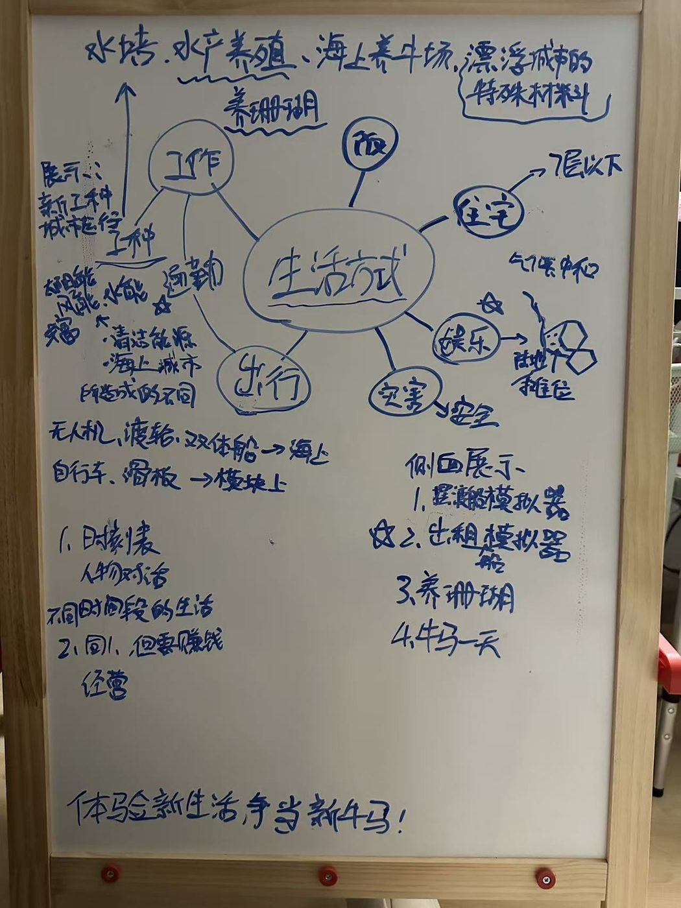
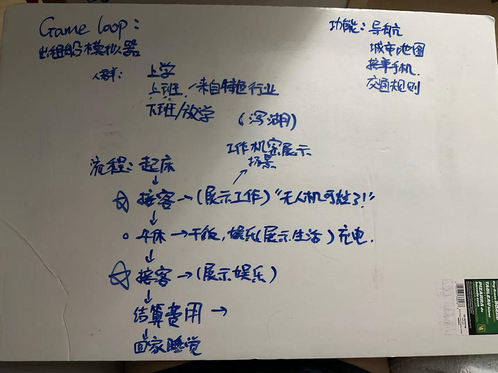
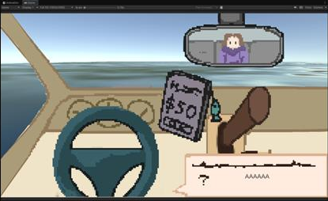
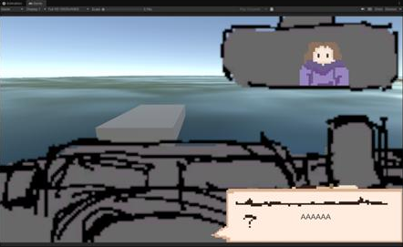

问题
学期初，项目遇到了严重的问题：「转变」这个目标不清晰，项目范围太大，内容过多。
思考
- 先有蓝图，后有主题。项目蓝图在我们认真研究「转变」之前就已经成形。我没有保持开放的设计心态，而是一直把转变理论往成型的项目上「贴」，理论只停留在表面，像贴在上面的便利贴，没有成为串起一切的核心结构。
- 范围控制不好。一开始的野心不切实际；在多个任务之间切换时容易失去焦点；也没有及时反思、缩减范围，项目变得混乱时还以为自己能全部搞定。
- 团队沟通不足。我在多个项目里都是唯一的设计和唯一的程序。唯一的程序无法避免，但唯一的设计是我作为主策划的责任：我应该根据团队的设计能力调整范围，更早拆分设计任务，预判可能的问题并给出明确的方案。
- 时间管理。我不擅长排期，这部分本应交给其他成员；但我没有把项目全貌讲清楚，没参与规划的成员不了解细节，更像是外包。我应该支持他们，让他们更多地参与规划。
决定：新方向
- 修改项目时陷入僵局后，我预约了 Douglas 教授的 office hour。教授讲清了项目要求和工作方法，给了具体有效的建议。
- 当天团队紧急讨论出新方向：保留「海上城市」的灵感，但把焦点转向具体的人，以及我们能实际解决的问题。我分享了收集的全部海上城市资料，讨论后把范围缩小到工作和交通，形成「水上出租车司机」的初步概念，每位成员都贡献了想法。
- 新概念：玩家驾驶水上出租车，往返海上城市的不同模块，通过和乘客对话了解城市生活的不同方面。核心系统是驾船和乘客对话。




决定：团队与流程
- 开始用 Jira 的 Scrum 框架指导开发：把系统整理成 Epic，再写用户故事、分配任务、设定每个系统的负责人。重新使用上学期学过的这些方法，对我帮助很大。
原型实现
作为程序，我为核心玩法搭了一个简单的原型。船舱内部作为 UI，透过窗户可以看到 3D 海面和港口建筑。
- 海面：担心直接用 Asset Store 资源会让项目臃肿，我跟着 DitzelGames 的教程，通过移动表面顶点、叠加波函数生成任意大小的动态海面，并学习制作海面材质。3D 美术提供了参数调整建议，帮忙找合适的颜色，并提议不同时段使用不同的海面材质；我认为比起直接切换材质，更平滑的做法是把时间作为过渡函数的变量。
- 复用系统：复用了以前叙事项目中的场景切换系统和对话管理系统。对话系统以 articy:draft X 作为数据库，原来的实现不完整，还需要按这个项目的需求修改。
驾驶设计
- 驾驶舱视角：和美术讨论后发现，原来的驾驶舱视角太高，让玩家感觉像坐在地上往上看。我们参考真实的摩托艇和《欧洲卡车模拟》的视角，重新设计了更宽、更舒适的驾驶舱布局。


- 操控方式：探索了不同的驾船方式，决定以摩托艇式的操控为主。我没有真实的驾船经验，计划从多方面收集设计原则：看驾驶视频理解手感，看教程了解基本原理和物理，请教有驾船经验的人确认细节。
- 设计原则：这不是一款「驾船模拟器」，模拟深度不追求《欧洲卡车模拟》那样。目标是用尽量少的规则做出可信的操控感，支撑沉浸感；同时驾驶不能盖过核心体验，在船舱里，玩家的注意力应该放在与乘客的对话上。
下一步
- 根据上面两个目标提出多种操控方案，保留表现最好的一种。
- 以团队完成的「转变」痛点调研为基础，敲定系统设计，并制作核心系统的灰盒版本。
原文（英文）：Devlog-Yunhao-Jan21，itch.io，2026.01.21。参考教程：DitzelGames 海面教程、The Code Otter 场景切换教程。